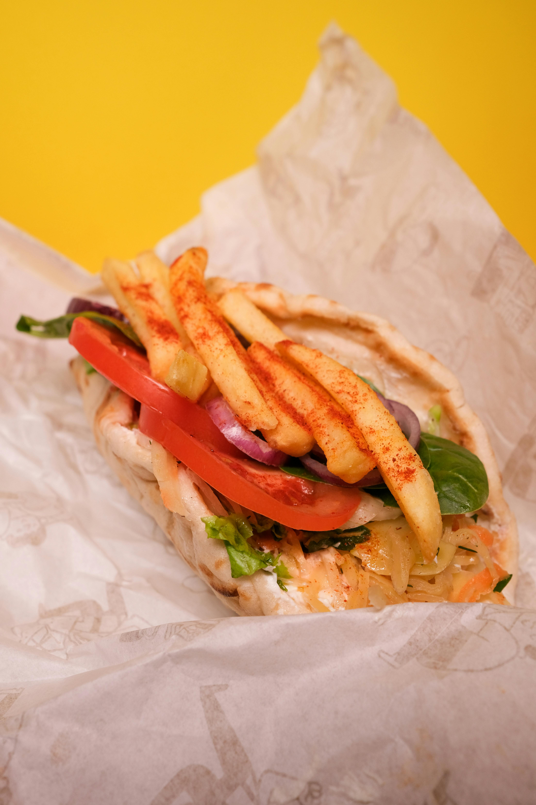

Chicken Gyros

Description of the chicken gyros recipe.
Chicken gyros is a flavorful Greek-inspired dish made with marinated chicken that is cooked until tender and slightly charred, then wrapped in warm pita bread.
It is typically served with fresh vegetables and a creamy tzatziki sauce, creating a delicious contrast of savory, tangy, and refreshing flavors.
This dish is popular for its satisfying combination of juicy meat, soft bread, and crisp toppings. Chicken gyros can be enjoyed as a quick meal or a hearty lunch,
and it brings together Mediterranean ingredients in a simple but vibrant way.
Ingredients
- Chicken breast or thighs – 500 grams (about 1 lb), sliced
- Pita breads – 4
- Greek yogurt – 1 cup
- Cucumber – 1/2, grated or finely chopped
- Garlic – 2-3 cloves, minced
- Lemon juice – 2 tablespoons
- Olive oil – 2 tablespoons
- Dried oregano – 1 teaspoon
- Paprika – 1 teaspoon
- Salt – to taste
- Black pepper – to taste
- Tomato – 1, sliced
- Red onion – 1/2, thinly sliced
- Lettuce – shredded (optional)
- Fresh dill or parsley – optional
Instructions
- In a bowl, combine olive oil, lemon juice, garlic, oregano, paprika, salt, and pepper.
- Add the chicken and mix well to coat. Let it marinate for at least 30 minutes.
- Make the tzatziki sauce by mixing Greek yogurt, grated cucumber, garlic, lemon juice, and a little salt in a bowl.
- Heat a skillet or grill pan over medium-high heat.
- Cook the chicken for 5-7 minutes per side, or until fully cooked and lightly charred.
- Warm the pita breads in a dry pan or oven for a minute or two.
- Slice the cooked chicken into strips if needed.
- Assemble each gyro by placing chicken on the pita bread.
- Top with tzatziki sauce, tomato, red onion, lettuce, and fresh herbs if using.
- Wrap or fold the pita and serve immediately.
Back to Home